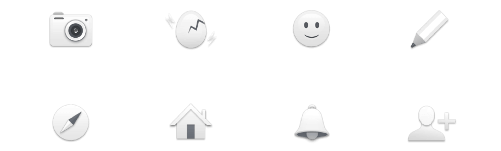

SSUP,
Social Media app
- Year
- client
- Role
- 2017
- Kakao
- Lead Designer

SSUP,
Social Media app
SSUP is a new social media app for Kakao that allows users who have less common interests to upload their honest stories to their home in app. It has a different concept from other social apps. It has some key features that promote unique interactions such as the stickers attached to the posts, the unlimited number of likes, and the ability to write with varied materials, including memes, fortunes and music.
As a lead designer on the team, I built the app concept and brand identity. According to the concept, I created the product by taking on all responsibilities, including coming up with ideas for features, making hi-fidelity prototypes and the user flow, conducting user tests, and designing marketing promotions.
Of Korean mobile users, 94% use Kakao’s messenger app. However, no social media app in Korea dominates Korean users in their twenties. Thus, Kakao needs a social media app for this social graph.
First and foremost, Koreans in their twenties mainly use Facebook and Instagram. However, the amount of use is decreasing. People feel hesitant to post their genuine emotions and honest stories because Facebook feeds have become so awash with spam advertisements and Instagram feeds have become flooded with staged and idealized images.
Secondly, after several prototyping, we concluded that most users do not use the apps that simply have good usability and features. That is why there are plenty of apps on the market, I learned that the important thing is not only the quality of the app but also a clear product concept and solid branding. We decided, as with early Instagram, that we should set up a narrow target range and expand it as the number of users grows.
We asked ourselves what kind of people the product was for and decided that our target was geeks and nerds. As I decided to emphasize that it was different from other social media, I supposed that the target should not be part of the mainstream. The contents of the app can represent the properties of the app, and I guessed that users with clear and unique identities could create unique contents. Because they are familiar with specific subjects they love, I thought the content created by them would be valuable.
Considering the biggest problem is the feed, we created our initial product by reinterpreting the structure of the user's home, such as Cyworld or MySpace, with the latest UX trend without the feed. In addition, as I assumed the real relationship s in social media to be another problem, I made it an anonymous product. Lastly, I focused on creating concepts and capabilities to attract our target. We built a concept that was unique and different from other products through the five-days Design sprint, and we obtained ideas for the features based on the result of the sprint.
Moreover, I provided a UI design that attracts user who like subcultures. I found that Vaporwave graphics and Emoji are the best element to express the concept of being unique. As a Vaporwave graphic is a 3D object on the flat vibrant color of the background, it not only is related to the flat design trend but also feels different. In addition, I produced UI elements by using Emojis that are not yet popular in Korea. Koreans are is not familiar with Emojis, but they find them intriguing as a new product of the internet.
I tried to create this app attractive on the first impression, as it is a new product. I guessed that a simple and easy structure would impress the user more than the many functions of other social media shown on one screen. It first provides a list of friends, and the user can visit the friends' home.
I tried to create this app attractive on the first impression, as it is a new product. I guessed that a simple and easy structure would impress the user more than the many functions of other social media shown on one screen. It first provides a list of friends, and the user can visit the friends' home.
We invented a new method of commucation among users. A user can put a sticker on a post and hit the Like button an unlimited number of times. Each post had a different type of Like animation. Extream Interaction led the users to interact more.
After prototyping many stickers, in line with our concept, we chose stickers for negative but interesting feedback rather than just positive feedback.
Each post had a different type of Like animation, which led the users to interact more. Moreover, users can hit the Like button an unlimited number of times. It shows the ranking of users who hit it the most.
Moreover, I provided a UI design that attracts user who like subcultures. I found that Vaporwave graphics and Emoji are the best element to express the concept of being unique.
Since this app consists of user posts, I guessed that the user posts should be abundant. Moreover, I made it fun for users to write. Users can attach memes and fortunes, movies, music, weather, and short sentences they want to write in big fonts. Moreover, each egg word has different colors, it looks rich among the posts in the feed.
We provided Chatbot to allow users to write posts. I also made it possible to attach several materials using AutoComplete. Using the keyboard area, the user can search the contents and attached it easily without moving to another screen.
users can see the posts that other user wrote about same subject including movies, tv show and musics.
Emojis are a key element of the app. Major icons and logos were made similar to Emojis, and empty states were created by using them.
As a key feature, users can make their own wallpapers by using them. More than 2,500 different Emojis are sufficient to express the individual characteristics of each user. They can choose two Emojis about their interests or identities to create patterns with colors.
Icons
Empty State Illustrations
From the beginning of the project, we considered branding an important factor, so we built up a brand identity with product concepts at the same time. I created a website, a promotion site that makes wallpapers by using Emojis, and brand goods, such as beer pints, soju shots, stickers, and badges. We decided what to make and how to make it according to the concept.

Social media apps are very different from utility apps. Since the quality of the apps on the market is higher on average, the concept and branding of the apps, rather than the usability, affect the success of the product. Therefore, I learned that both branding and product concept should be emphasized when creating products in competitive markets.
The app took for eight months to develop, and its launch caused a stir in the Korean IT industry. It was introduced to various media as a unique product that would be hard for big Korean companies to make. Since we were commissioned to create a new social media app, we determined the the direction and details that all members could understand and agree on by design thinking, agile, and lean startup. Unlike the traditional Korean way of working, all of the team members were treated as equals. That is why we could make a unique and high-quality product.